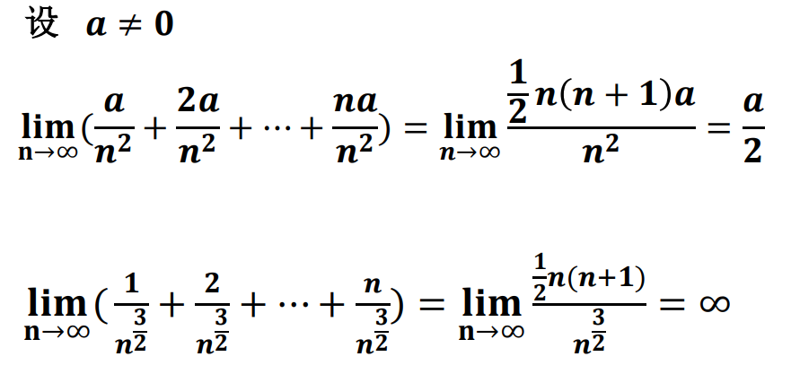
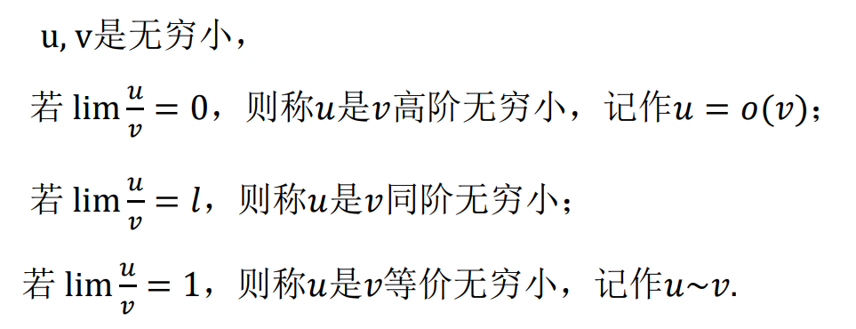
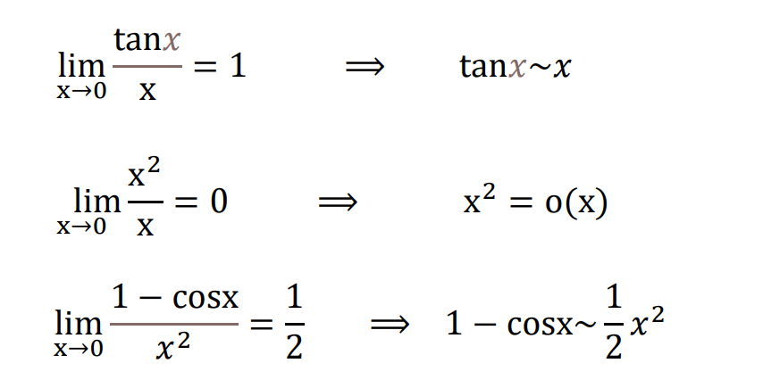
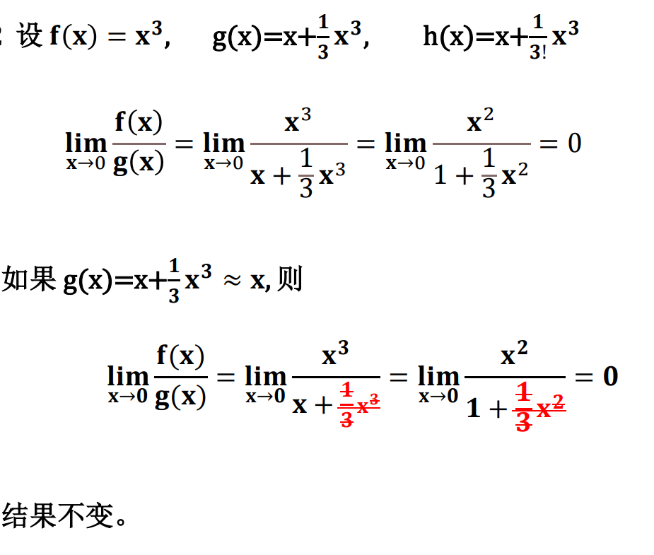
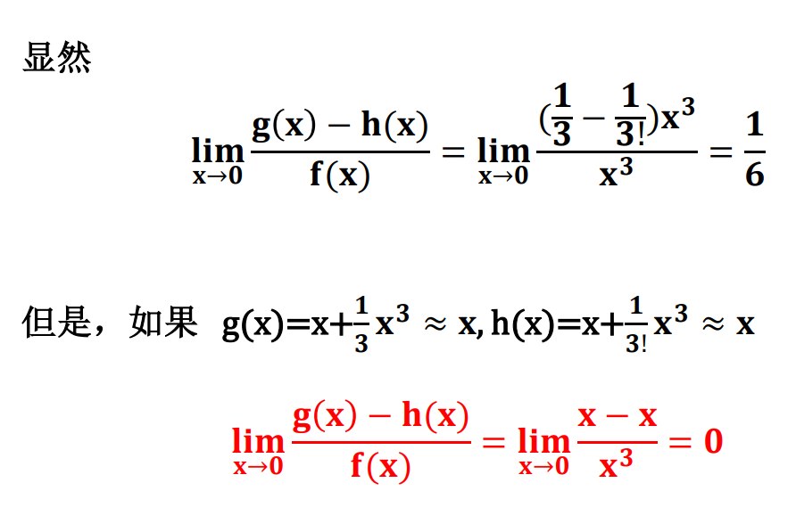
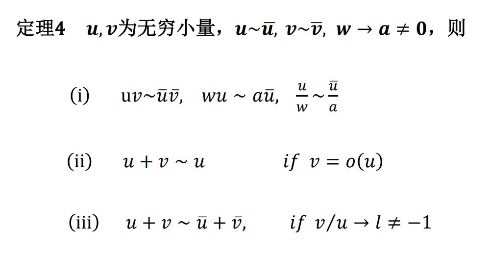

| 无穷小量(Infinitesimal)的概念介绍 |
|---|
一、无穷小的定义、和规则、积规则 𝐥𝐢𝐦 𝒖 = 𝟎 , 称𝑢为无穷小量。 运算规则 （1）线性运算 两个无穷小的和仍为无穷小；有限个无穷小的积仍为无穷小 （2）积规则 两个无穷小的积仍为无穷小；有限个无穷小的积仍为无穷小 有界量与无穷小的积仍为无穷小 注1.应该注意到：无限个无穷小的和可能为任何实数或者无穷大 ，因此不能简单判断，下面给出例子  注2.线性规则和积规则的成立，自然引发下面的疑问：无穷小有没有商规则？无穷小的商是不是无穷小？ 在此直接给出结论：两个无穷小的商可能是任意实数，而不一定是无穷小(因此有无穷小量的比较), 读者可仿照注1找出实例，在此略去不谈 |
二、无穷小量的比较 首先给出定义：   初学者往往在此会有误解，在此列举一二并进行说明。 1.不能写成 𝐨( 𝐯 )= 𝒖. 𝐨( 𝐯 )= 𝒖除了定义所示的意义( 𝒖 是𝐯高阶无穷小)，别无意义，不可当作通常的等式处理。 例如，两个不同的函数都是x的高阶无穷小，不能因此说两个函数相等。 2.无穷小不能“在任何情况下都忽略不计”，需要考虑实际，在此举一个例子。   出现矛盾，这就引发我们对无穷小量运算规则的探究。  现在再回过头来看所举例子，可以发现错误做法违背了(iii)的和规则，读者若正确使用这些规则，便能得到正确答案了。 |
| 另：读者可能会问：无穷小量的研究有什么用处？在后续学习中，我们会发现它可以从另一角度推出Taylor公式，这也从一个角度证明了微积分理论体系的完整与自洽。 |
| 返回主页 上一页 下一页 |